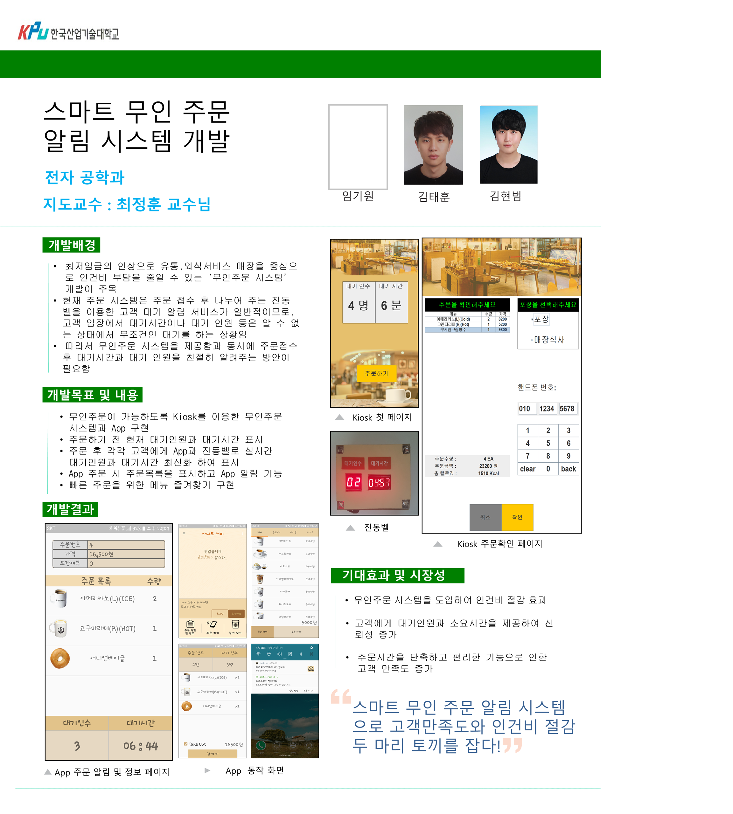

Smart Unmanned Order System
Intro
| Develop Period |
2017.09 ~ 2018.07
|
|
|
∎ Developed GUI for the Counter and for the unmanned ordering machine
∎ Informed customers of waiting information, enabling them to select menus efficiently when
ordering
|
|
|
∎
Order using Kiosk and App
∎
Wait information is available before ordering
∎
Vibration bell that shows waiting information
|
|
|
∎ Kiosk - Eclipse - Using Java Swing
∎ Counter - Eclipse - Using Java FX
∎ App - Android Studio - Using Java
∎ Vibration bell
- RaspberryPi - Using C language |
|
|
∎ By providing waiting information,
customers were able to increase satisfaction and save labor costs by using unmanned ordering machines.
|
scenario

∎ When an app is ordered, waiting information is updated in real time in pop-up window.

∎ When ordering from a kiosk or counter, the server sends waiting information to the vibrating signal.
∎ When finished cooking is completed, the vibration bell is initialized and the vibration is triggered.
Result

∎ Kiosk : Display waiting information on the first screen.
∎ App : Display waiting information in order screen.
∎ Vibretion bell : The Waiting information is displayed through the FND at the top of the vibrating signal.